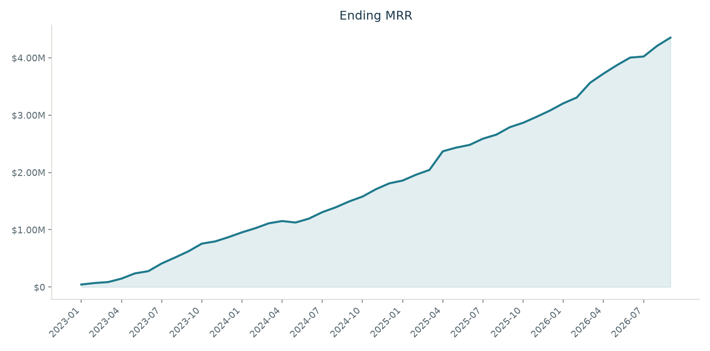
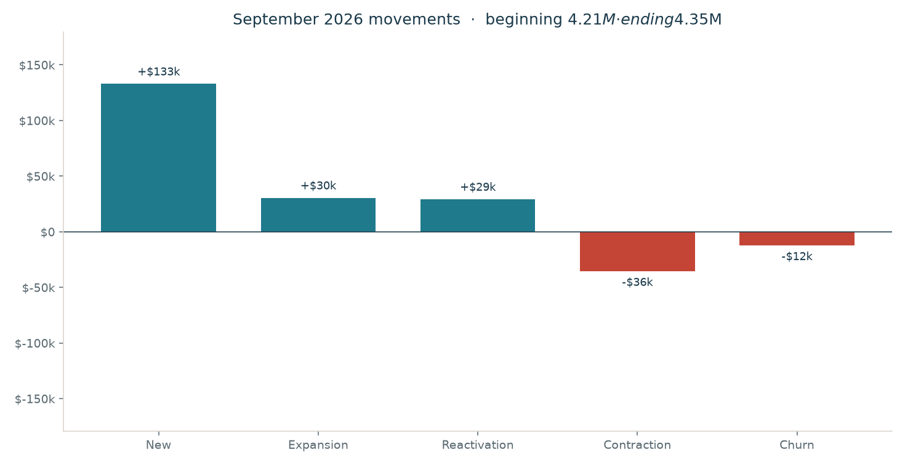
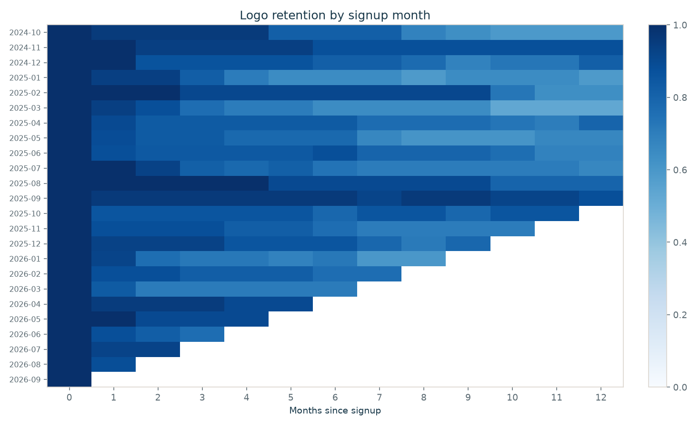
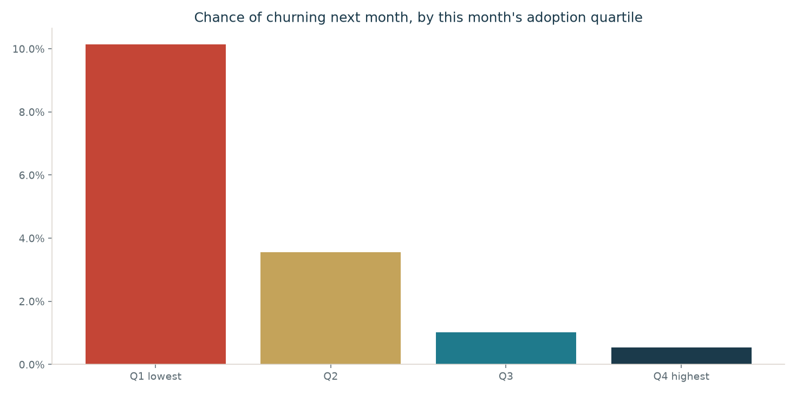

Ending MRR
$4.35M
September 2026 close
SaaS analytics · closed September 2026
Ending MRR is the live book. Net revenue retention follows one cohort for twelve months. The two numbers answer different questions.
Ending MRR
$4.35M
September 2026 close
MRR vs last year
56.0%
September 2026 vs September 2025
Net revenue retention
96.4%
Oct 2025 cohort, valued Sep 2026
Gross revenue retention
87.5%
Same cohort, expansion capped
Logo retention
81.3%
Same cohort, still paying
Quick ratio
4.01
September: added MRR / lost MRR




| Plan | Logos | Ending MRR | ARPA | Avg seats |
|---|---|---|---|---|
| Starter | 119 | $68.3k | $574 | 14.7 |
| Growth | 107 | $227.9k | $2,130 | 23.9 |
| Scale | 144 | $1.01M | $6,983 | 39.0 |
| Enterprise | 143 | $3.05M | $21.3k | 53.4 |
| Channel | Spend | New logos | CAC | Still paying at month 6 |
|---|---|---|---|---|
| Paid Search | $2.21M | 155 | $14.2k | 70.2% |
| Outbound | $1.37M | 149 | $9,201 | 83.7% |
| Content | $639.6k | 147 | $4,351 | 81.9% |
| Partner | $478.1k | 128 | $3,735 | 78.0% |
| Organic | $261.1k | 141 | $1,852 | 77.3% |